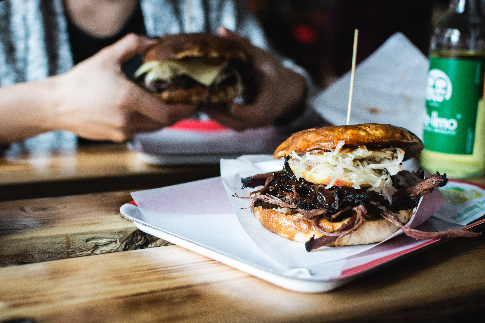

A juicy, classic beef burger with melted cheddar cheese, fresh lettuce, and ripe tomatoes. Perfect for a weekend cheat meal or a high-protein dinner.

Photo from Foodiesfeed Website! Photographer Jakub Kapusnak.
Ingredients
500g ground beef (80% lean, 20% fat for best flavor)
4 burger buns
4 slices of cheddar cheese
fresh lettuce leaves
1 large tomato, sliced
1 onion, sliced into rings
Salt and black pepper to taste
1 tablespoon butter (for toasting the buns)
Instructions
Divide the ground beef into 4 equal portions and shape them into patties. season both sides generously with salt and pepper.
Heat a large skillet or grill over medium-high heat.
Cook the patties for about 3-4 minutes on one side. flip them, place a slice of cheese on each patty, and cook for another 3-4 minutes until the cheese is melted.
While the patties are cooking, spread butter on the inside of the burger buns and toast them lightly in a separate pan.
Assemble the burger: Place a lettuce leaf on the bottom bun, add the cheesy beef patty, then top with tomato slices and onion rings.
Cover with the top bun and serve immediately while hot!